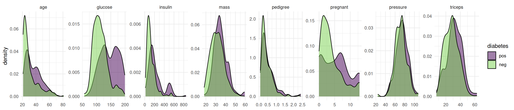
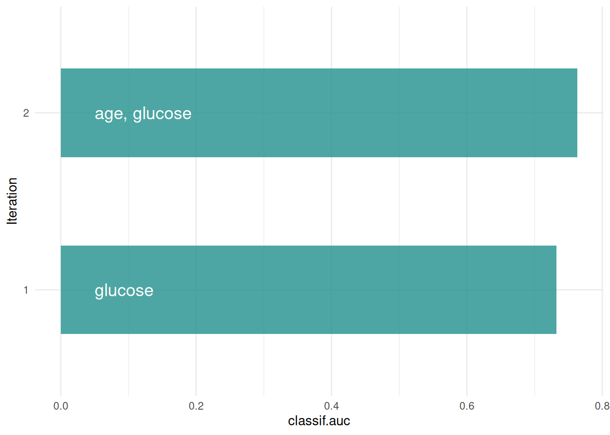

library(mlr3verse)Scope
Feature selection is the process of finding an optimal set of features to improve the performance, interpretability and robustness of machine learning algorithms. In this article, we introduce the Shadow Variable Search algorithm which is a wrapper method for feature selection. Wrapper methods iteratively add features to the model that optimize a performance measure. As an example, we will search for the optimal set of features for a support vector machine on the diabetes data set. We assume that you are already familiar with the basic building blocks of the mlr3 ecosystem. If you are new to feature selection, we recommend reading the feature selection chapter of the mlr3book first. Some knowledge about mlr3pipelines is beneficial but not necessary to understand the example.
Shadow Variable Search
Adding shadow variables to a data set is a well-known method in machine learning (Wu et al. 2007; Thomas et al. 2017). The idea is to add permutated copies of the original features to the data set. These permutated copies are called shadow variables or pseudovariables and the permutation breaks any relationship with the target variable, making them useless for prediction. The subsequent search is similar to the sequential forward selection algorithm, where one new feature is added in each iteration of the algorithm. This new feature is selected as the one that improves the performance of the model the most. This selection is computationally expensive, as one model for each of the not yet included features has to be trained. The difference between shadow variable search and sequential forward selection is that the former uses the selection of a shadow variable as the termination criterion. Selecting a shadow variable means that the best improvement is achieved by adding a feature that is unrelated to the target variable. Consequently, the variables not yet selected are most likely also correlated to the target variable only by chance. Therefore, only the previously selected features have a true influence on the target variable.
mlr3fselect is the feature selection package of the mlr3 ecosystem. It implements the shadow variable search algorithm. We load all packages of the ecosystem with the mlr3verse package.
We retrieve the shadow variable search optimizer with the fs() function. The algorithm has no control parameters.
optimizer = fs("shadow_variable_search")Task and Learner
The objective of the diabetes data set is to predict whether a person has diabetes or not. The data set includes 128 patients with 8 measurements (see Figure 1).
task = tsk("diabetes")Code
library(ggplot2)
library(data.table)
data = melt(as.data.table(task), id.vars = task$target_names, measure.vars = task$feature_names)
ggplot(data, aes(x = value, fill = diabetes)) +
geom_density(alpha = 0.5) +
facet_wrap(~ variable, ncol = 8, scales = "free") +
scale_fill_viridis_d(end = 0.8) +
theme_minimal() +
theme(axis.title.x = element_blank())
The data set contains missing values.
task$missings()diabetes age glucose insulin mass pedigree pregnant pressure triceps
0 0 5 405 13 0 0 35 251 Support vector machines cannot handle missing values. We impute the missing values with the histogram imputation method.
learner = po("imputehist") %>>% lrn("classif.svm", predict_type = "prob")Feature Selection
Now we define the feature selection problem by using the fsi() function that constructs an FSelectInstanceBatchSingleCrit. In addition to the task and learner, we have to select a resampling strategy and performance measure to determine how the performance of a feature subset is evaluated. We pass the "none" terminator because the shadow variable search algorithm terminates by itself.
instance = fsi(
task = task,
learner = learner,
resampling = rsmp("cv", folds = 3),
measures = msr("classif.auc"),
terminator = trm("none")
)We are now ready to start the shadow variable search. To do this, we simply pass the instance to the $optimize() method of the optimizer.
optimizer$optimize(instance) age glucose insulin mass pedigree pregnant pressure triceps features n_features classif.auc
<lgcl> <lgcl> <lgcl> <lgcl> <lgcl> <lgcl> <lgcl> <lgcl> <list> <int> <num>
1: TRUE TRUE FALSE FALSE FALSE FALSE FALSE FALSE age,glucose 2 0.7634832The optimizer returns the best feature set and the corresponding estimated performance.
Figure 2 shows the optimization path of the feature selection. The feature glucose was selected in the first iteration. In the second iteration, a shadow variable achieved the best performance and the feature selection was terminated.
Code
library(data.table)
library(ggplot2)
library(mlr3misc)
library(viridisLite)
data = as.data.table(instance$archive)[order(-classif.auc), head(.SD, 1), by = batch_nr][order(batch_nr)]
data[, features := map_chr(features, str_collapse)]
data[, batch_nr := as.character(batch_nr)]
ggplot(data, aes(x = batch_nr, y = classif.auc)) +
geom_bar(
stat = "identity",
width = 0.5,
fill = viridis(1, begin = 0.5),
alpha = 0.8) +
geom_text(
data = data,
mapping = aes(x = batch_nr, y = 0, label = features),
hjust = 0,
nudge_y = 0.05,
color = "white",
size = 5
) +
coord_flip() +
xlab("Iteration") +
theme_minimal()
The archive contains all evaluated feature sets. We can see that each feature has a corresponding shadow variable. We only show the variables age, glucose and insulin and their shadow variables here.
as.data.table(instance$archive)[, .(age, glucose, insulin, permuted__age, permuted__glucose, permuted__insulin, classif.auc)] age glucose insulin permuted__age permuted__glucose permuted__insulin classif.auc
<lgcl> <lgcl> <lgcl> <lgcl> <lgcl> <lgcl> <num>
1: TRUE FALSE FALSE FALSE FALSE FALSE 0.6293962
2: FALSE TRUE FALSE FALSE FALSE FALSE 0.7324826
3: FALSE FALSE TRUE FALSE FALSE FALSE 0.5372201
4: FALSE FALSE FALSE FALSE FALSE FALSE 0.5911540
5: FALSE FALSE FALSE FALSE FALSE FALSE 0.4863944
---
27: FALSE TRUE FALSE FALSE FALSE FALSE 0.7412129
28: FALSE TRUE FALSE FALSE FALSE FALSE 0.7421452
29: FALSE TRUE FALSE FALSE FALSE FALSE 0.7546359
30: FALSE TRUE FALSE FALSE FALSE FALSE 0.7490620
31: FALSE TRUE FALSE FALSE FALSE FALSE 0.7447025Final Model
The learner we use to make predictions on new data is called the final model. The final model is trained with the optimal feature set on the full data set. We subset the task to the optimal feature set and train the learner.
task$select(instance$result_feature_set)
learner$train(task)The trained model can now be used to predict new, external data.
Conclusion
The shadow variable search is a fast feature selection method that is easy to use. More information on the theoretical background can be found in Wu et al. (2007) and Thomas et al. (2017). If you want to know more about feature selection in general, we recommend having a look at our book.
Session Information
sessioninfo::session_info(info = "packages")═ Session info ═══════════════════════════════════════════════════════════════════════════════════════════════════════
─ Packages ───────────────────────────────────────────────────────────────────────────────────────────────────────────
package * version date (UTC) lib source
backports 1.5.1 2026-04-03 [1] RSPM
base64url 1.4 2018-05-14 [1] RSPM
batchtools 0.9.18 2025-08-20 [1] RSPM
bbotk 1.13.1 2026-09-17 [1] RSPM
bit 4.6.0 2025-03-06 [1] RSPM
bit64 4.8.6 2026-09-01 [1] RSPM
brew 1.0-10 2023-12-16 [1] RSPM
callr 3.8.0 2026-06-05 [1] RSPM
checkmate 2.3.4 2026-02-03 [1] RSPM
class 7.3-24 2026-08-03 [2] CRAN (R 4.6.2)
classInt 0.4-11 2025-01-08 [1] RSPM
cli 3.6.6 2026-04-09 [1] RSPM
codetools 0.2-20 2024-03-31 [2] CRAN (R 4.6.2)
coro 1.1.0 2024-11-05 [1] RSPM
crayon 1.5.3 2024-06-20 [1] RSPM
data.table * 1.18.6.1 2026-08-24 [1] RSPM
DBI 1.3.0 2026-02-25 [1] RSPM
dictionar6 0.1.3 2026-02-23 [1] https://m~
digest 0.6.39 2025-11-19 [1] RSPM
distr6 1.8.4 2026-02-23 [1] https://m~
dplyr 1.2.1 2026-04-03 [1] RSPM
e1071 1.7-17 2025-12-18 [1] RSPM
evaluate 1.0.5 2025-08-27 [1] RSPM
farver 2.1.2 2024-05-13 [1] RSPM
fastmap 1.2.0 2024-05-15 [1] RSPM
future 1.82.0 2026-11-02 [1] RSPM
future.apply 1.21.0 2026-10-16 [1] RSPM
generics 0.1.4 2025-05-09 [1] RSPM
ggplot2 * 4.0.3 2026-04-22 [1] RSPM
globals 0.20.0 2026-10-11 [1] RSPM
glue 1.8.1 2026-04-17 [1] RSPM
gtable 0.3.6 2024-10-25 [1] RSPM
hms 1.1.4 2025-10-17 [1] RSPM
htmltools 0.5.9 2025-12-04 [1] RSPM
htmlwidgets 1.6.4 2023-12-06 [1] RSPM
jsonlite 2.0.0 2025-03-27 [1] RSPM
KernSmooth 2.23-27 2026-08-12 [2] CRAN (R 4.6.2)
knitr 1.52 2026-09-06 [1] RSPM
labeling 0.4.3 2023-08-29 [1] RSPM
lattice 0.23-1 2026-08-12 [2] CRAN (R 4.6.2)
lgr 0.5.2 2026-01-30 [1] RSPM
lifecycle 1.0.5 2026-01-08 [1] RSPM
listenv 1.1.0 2026-10-04 [1] RSPM
magrittr 2.0.5 2026-04-04 [1] RSPM
Matrix 1.7-6 2026-07-25 [2] CRAN (R 4.6.2)
matrixStats 1.5.0 2025-01-07 [1] RSPM
mgcv 1.9-4 2025-11-07 [2] CRAN (R 4.6.2)
mlr3 * 1.8.0 2026-08-21 [1] RSPM
mlr3batchmark 0.2.2 2025-09-04 [1] RSPM
mlr3benchmark 0.1.8 2026-08-21 [1] RSPM
mlr3cluster 0.7.0 2026-10-17 [1] RSPM
mlr3cmprsk 0.0.7 2026-10-18 [1] https://m~
mlr3data 0.9.0 2024-11-08 [1] RSPM
mlr3db 0.7.3 2026-11-03 [1] RSPM
mlr3extralearners 1.7.0 2026-09-15 [1] https://m~
mlr3fairness 0.4.0 2026-11-04 [1] Github (mlr-org/mlr3fairness@6946cbe)
mlr3fda 0.7.2 2026-08-21 [1] RSPM
mlr3filters 0.9.1 2026-04-23 [1] RSPM
mlr3fselect 1.7.0 2026-08-23 [1] RSPM
mlr3hyperband 1.1.1 2026-07-25 [1] RSPM
mlr3inferr 0.2.2 2026-08-21 [1] RSPM
mlr3learners 0.16.0 2026-09-08 [1] RSPM
mlr3mbo 1.2.1 2026-07-26 [1] RSPM
mlr3measures 1.3.0 2026-04-17 [1] RSPM
mlr3misc * 0.23.0 2026-08-21 [1] RSPM
mlr3oml 0.12.0 2026-01-28 [1] RSPM
mlr3pipelines 0.12.0 2026-09-05 [1] RSPM
mlr3proba 0.8.10 2026-06-05 [1] https://m~
mlr3spatial 0.7.0 2026-07-14 [1] RSPM
mlr3spatiotempcv 2.3.5 2026-08-03 [1] RSPM
mlr3torch 0.4.0 2026-10-30 [1] RSPM
mlr3tuning 1.7.0 2026-09-02 [1] RSPM
mlr3tuningspaces 0.7.0 2026-07-25 [1] RSPM
mlr3verse * 0.4.0 2026-09-15 [1] RSPM
mlr3viz 0.11.2 2026-09-23 [1] RSPM
mlr3website * 0.0.0.9000 2026-11-04 [1] Github (mlr-org/mlr3website@3087c0c)
moocore 0.3.2 2026-07-12 [1] RSPM
nlme 3.1-171 2026-09-01 [2] CRAN (R 4.6.2)
ooplah 0.2.0 2022-03-25 [1] https://m~
otel 0.2.0 2025-08-29 [1] RSPM
palmerpenguins 0.1.1 2022-08-15 [1] RSPM
paradox 1.0.1 2024-07-09 [1] RSPM
parallelly 1.50.0 2026-10-31 [1] RSPM
param6 0.2.4 2026-02-23 [1] https://m~
pillar 1.11.1 2025-09-17 [1] RSPM
pkgconfig 2.0.3 2019-09-22 [1] RSPM
prettyunits 1.2.0 2023-09-24 [1] RSPM
processx 3.9.0 2026-04-22 [1] RSPM
progress 1.2.3 2023-12-06 [1] RSPM
proxy 0.4-29 2025-12-29 [1] RSPM
ps 1.9.3 2026-04-20 [1] RSPM
purrr 1.2.2 2026-04-10 [1] RSPM
R6 2.6.1 2025-02-15 [1] RSPM
rappdirs 0.3.4 2026-01-17 [1] RSPM
rbibutils 2.4.1 2026-01-21 [1] RSPM
RColorBrewer 1.1-3 2022-04-03 [1] RSPM
Rcpp 1.1.2 2026-07-05 [1] RSPM
Rdpack 2.6.6 2026-02-08 [1] RSPM
rlang 1.3.0 2026-07-05 [1] RSPM
rmarkdown 2.32 2026-09-01 [1] RSPM
S7 0.2.2 2026-04-22 [1] RSPM
scales 1.4.0 2025-04-24 [1] RSPM
sessioninfo 1.2.4 2026-06-04 [1] RSPM
set6 0.2.6 2026-02-23 [1] https://m~
sf 1.1-3 2026-09-11 [1] RSPM
spacefillr 0.4.0 2025-02-24 [1] RSPM
stringi 1.8.9 2026-08-04 [1] RSPM
survival 3.8-12 2026-09-09 [2] CRAN (R 4.6.2)
terra 1.9-50 2026-09-08 [1] RSPM
tf 0.5.0 2026-07-14 [1] RSPM
tibble 3.3.1 2026-01-11 [1] RSPM
tidyselect 1.2.1 2024-03-11 [1] RSPM
torch 0.17.0 2026-04-11 [1] RSPM
units 1.0-1 2026-03-11 [1] RSPM
uuid 1.2-2 2026-01-23 [1] RSPM
vctrs 0.7.3 2026-04-11 [1] RSPM
viridisLite * 0.4.3 2026-02-04 [1] RSPM
withr 3.0.3 2026-06-19 [1] RSPM
xfun 0.62 2026-10-16 [1] RSPM
yaml 2.3.12 2025-12-10 [1] RSPM
zoo 1.9-1 2026-09-25 [1] RSPM
[1] /usr/local/lib/R/site-library
[2] /usr/local/lib/R/library
* ── Packages attached to the search path.
──────────────────────────────────────────────────────────────────────────────────────────────────────────────────────References
Thomas, Janek, Tobias Hepp, Andreas Mayr, and Bernd Bischl. 2017. “Probing for Sparse and Fast Variable Selection with Model-Based Boosting.” Computational and Mathematical Methods in Medicine 2017 (July): e1421409. https://doi.org/10.1155/2017/1421409.
Wu, Yujun, Dennis D Boos, and Leonard A Stefanski. 2007. “Controlling Variable Selection by the Addition of Pseudovariables.” Journal of the American Statistical Association 102 (477): 235–43. https://doi.org/10.1198/016214506000000843.